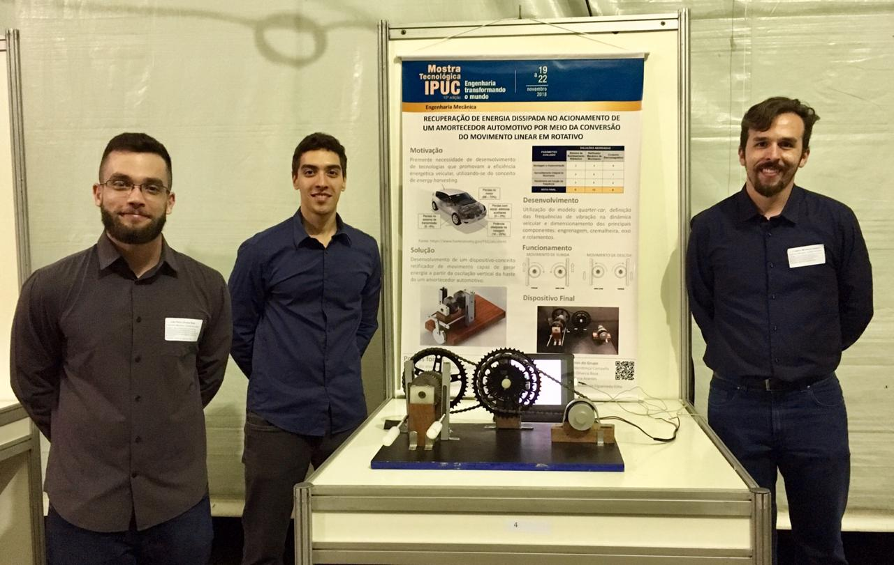
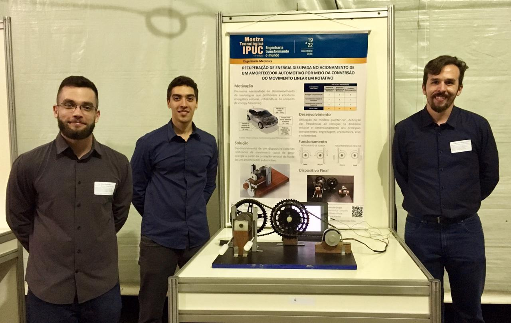

Contextualização
A eficiência energética é uma temática que vem recebendo cada vez mais atenção no mundo. Tal fato pode ser atribuído principalmente a dois fatores: a crescente demanda de energia e o esgotamento de recursos energéticos. No caso da indústria automobilística, as restrições impostas à emissão de poluentes têm obrigado as montadoras a colocar a eficiência energética como prioridade nos projetos de automóveis.
Neste cenário, um conceito que merece destaque é o de energy harvesting (colheita de energia). Trata-se de um processo de conversão de uma determinada forma de energia (que normalmente não seria aproveitada no processo) em energia elétrica, e seu respectivo armazenamento/reutilização quando necessário.
Sistemas e componentes automotivos como o escapamento e o amortecedor representam oportunidades de aproveitamento energético, tendo em vista que o funcionamento destes produz formas de energia que normalmente não são captadas e utilizadas no veículo. Pode-se citar, como exemplo, a energia térmica resultante da combustão no motor e a energia cinética e vibracional dos amortecedores.
Potencial brasileiro
Pode-se dizer que o Brasil apresenta um alto potencial de aplicação da tecnologia de reaproveitamento energético de amortecedores veiculares. Dados da última pesquisa de rodovias (2017) da Confederação Nacional do Transporte (CNT) confirmam o predomínio da malha rodoviária na matriz brasileira de transportes, representando 61% da matriz de transporte de cargas e 95% do transporte de passageiros.
Ainda segundo a pesquisa, que avaliou 105.814 quilômetros de rodovias pavimentadas em todo o país, 82.959 quilômetros (78,4% do total) apresentam algum tipo de problema na condição de superfície do pavimento. Em 51,1% observou-se desgaste; em 23,9%, trinca em malha ou remendos; e em 2,3%, afundamentos, ondulações ou buracos.
Para os automóveis, uma das consequências dos problemas das rodovias é o aumento do consumo de combustível, resultado de constante operação em condições severas, por exemplo: realizando frenagens abruptas e trafegando continuamente em baixa velocidade devido às irregularidades do pavimento. O estado de conservação inadequado que compõe parte da malha rodoviária brasileira produz vibrações de maior frequência nos amortecedores, além de maior amplitude nos movimentos de extensão e compressão. Tal situação pode potencializar a geração de energia elétrica a partir da utilização de sistemas regenerativos de amortecimento.
Problema a ser resolvido
Aproveitamento das condições superficiais não ideais da malha rodoviária para a geração de energia elétrica em sistemas de amortecimento de veículos automotivos.
Descrição do produto
Desenvolvimento de um dispositivo-conceito retificador de movimento com a finalidade de gerar energia a partir da oscilação vertical da haste de um amortecedor automotivo, potencializado pelas irregularidades das malhas rodoviárias. Para isso, foram utilizados dois conjuntos pinhão-cremalheira associados a um gerador, elementos que serão interligados por um eixo. A montagem e consolidação do mecanismo será seguida de testes para garantir a correta integridade e funcionalidade do sistema para eventual aplicação em veículos automotivos leves.
Características, especificações e funcionalidades
- Conversão de movimento linear em rotativo.
- Transformação de energia mecânica em elétrica.
- Peso estimado do mecanismo: 3,289 kg.
- Nível máximo de ruído produzido: 65 dB.
- Análise vibracional baseada em um grau de liberdade (simplificação).
Requisitos
- Aproveitar o deslocamento do componente de amortecimento, maximizado pelas irregularidades da malha rodoviária.
- Resistir às intempéries mais comuns como chuva, vento e temperatura de operação até 57ºC.
- Operar em uma faixa de frequência variando entre 2,0 Hz e 14,0 Hz.
- A amplitude máxima de movimento a qual o mecanismo poderá se submeter é de 45 mm.
- A velocidade de movimentação vertical da haste do amortecedor deverá ter um valor máximo de 0,1332 m/s.
- O dispositivo deverá apresentar boas respostas para veículos leves, com valor máximo de 1200 kg de massa.
- O eixo de saída deverá rotacionar sempre no mesmo sentido, evitando perdas no gerador.
| ITEM | DESCRIÇÃO |
|---|---|
| 1.1 | Base |
| 1.2 | Apoios |
| 2.0 | Dispositivo-conceito |
| 3.0 | Amplificador de rotação |
 
